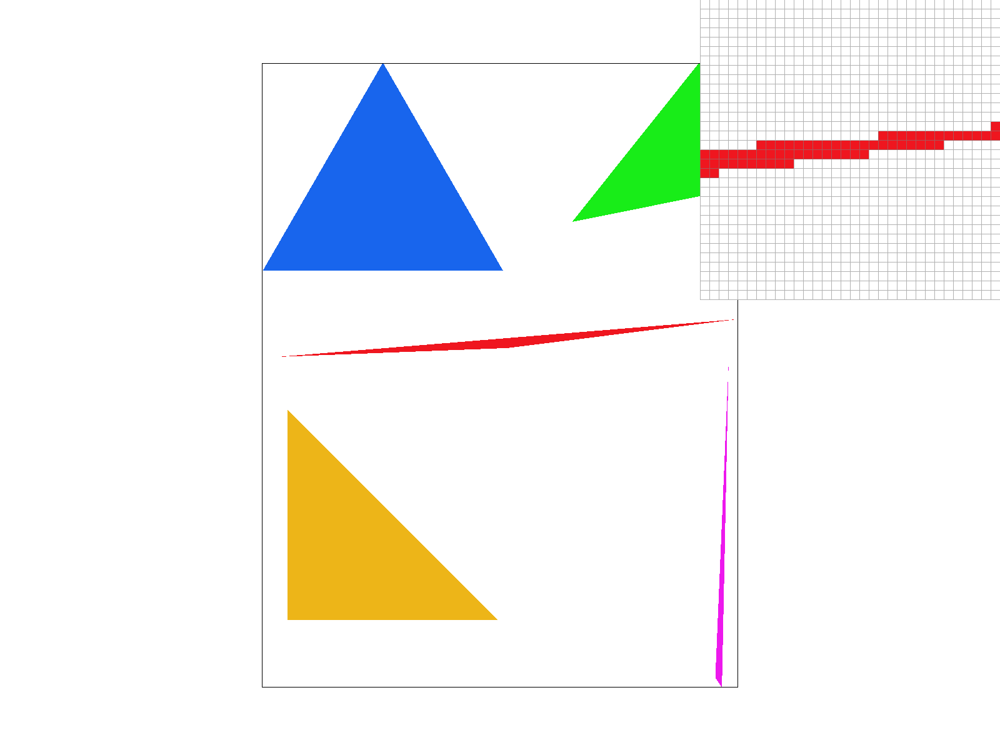
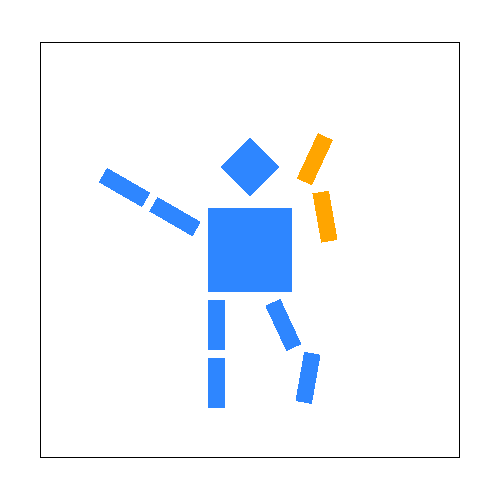
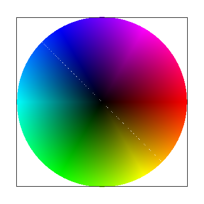
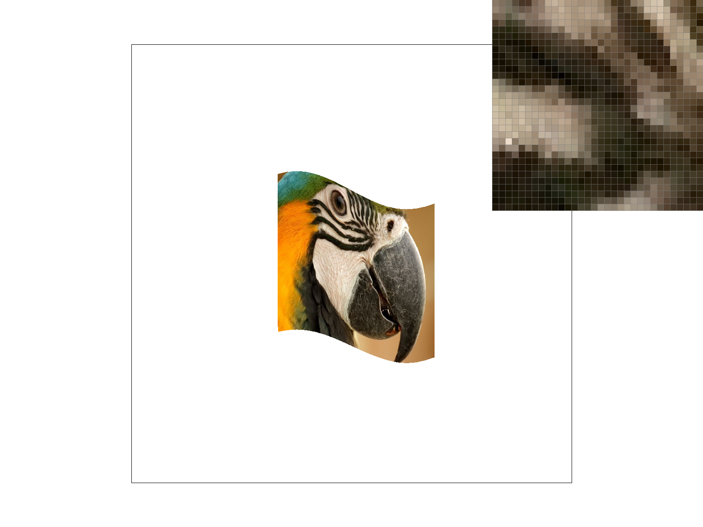
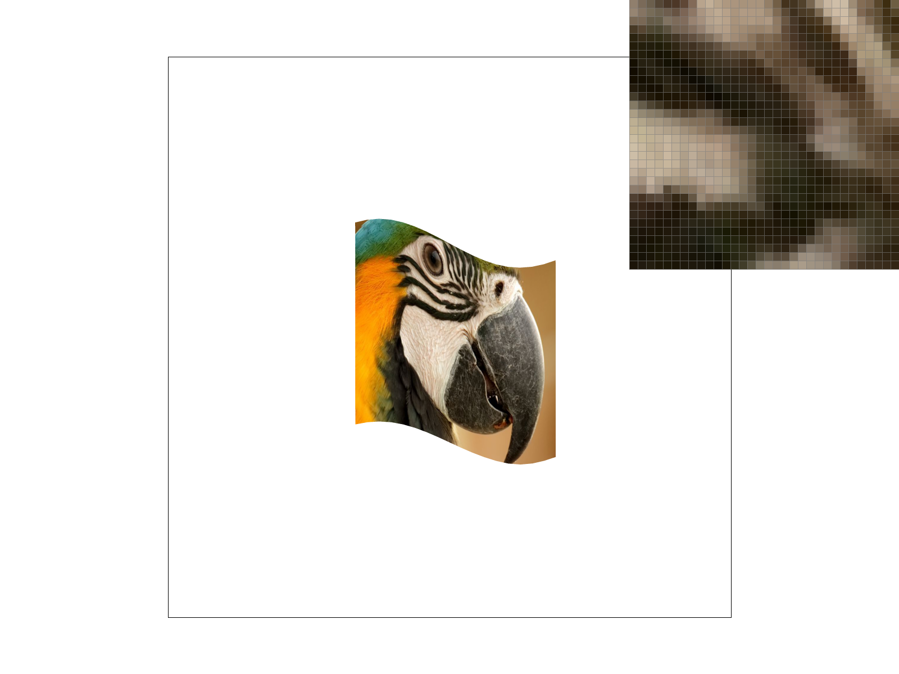
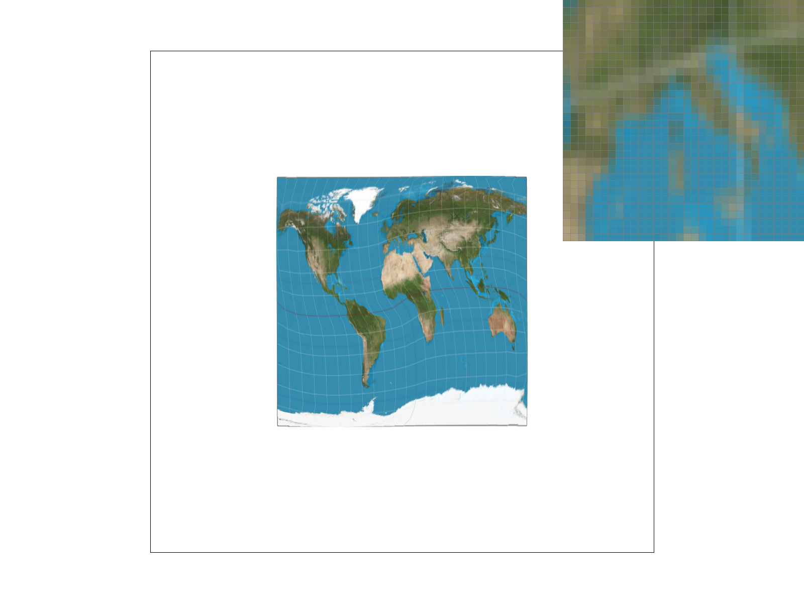

CS184/284A Fall 2026 Homework 1 Write-Up
Link to webpage: cal-cs184-student.github.io/hw1-lebron-writeup
Link to GitHub repository: github.com/cal-cs184-student/hw1-lebron-writeup
Overview
This assignment builds a 2D vector-graphics rasterizer from scratch: triangle rasterization with a bounding-box + edge-function test, antialiasing via supersampling, a hierarchical 2D affine transform stack for composing SVG scenes, barycentric-coordinate color interpolation, and texture mapping with nearest and bilinear pixel sampling plus mipmap-based level sampling to fight texture minification aliasing.
The most interesting thing I took away is how much of the pipeline is really the same three ingredients reused at increasing levels of sophistication: a triangle's bounding box, its signed edge function, and the barycentric weights derived from that same edge function. Task 1's flat-color fill, Task 4's color interpolation, and Task 5/6's UV interpolation for texture mapping are all literally the same loop with a different value being interpolated across the triangle.
Task 1: Drawing Single-Color Triangles
I rasterize a triangle by first computing its axis-aligned bounding box from the min/max of its three vertices (floor/ceil), clamped to the framebuffer's own bounds. Only pixels inside that box are ever tested, which is what makes this at least as efficient as bounding-box sampling is supposed to be: work is proportional to the triangle's screen-space area rather than to the whole framebuffer, so a small triangle on a large canvas costs almost nothing, and in the worst case (a triangle covering the whole canvas) it degenerates to exactly the full-framebuffer scan — never worse.
For each pixel in the box I test its center sample point (x+0.5, y+0.5) against the
triangle's three edges using the signed edge function edge(A,B,P) = (B-A) × (P-A)
(a 2D cross product). A sample is inside the triangle exactly when all three edge values share the same
sign, which is what makes the test winding-order independent: it draws the triangle correctly whether its
vertices are listed clockwise or counterclockwise, without needing to know or fix the winding order ahead
of time. Using >=/<= instead of strict inequalities means a sample that
lands exactly on an edge is still drawn, which is the inclusive-boundary behavior the assignment asks for.

basic/test4.svg at default parameters, with the pixel inspector zoomed on
the tip of the thin red sliver triangle — the shallow-angle corner where a point-in-triangle
test at only the pixel center is most likely to disagree with a naive "cover every pixel the triangle
touches" approach, and where boundary-inclusive edge handling matters most.Task 2: Antialiasing by Supersampling
Supersampling is implemented by giving every pixel sample_rate contiguous slots in a flat
sample_buffer, addressed as (y*width + x) * sample_rate + s. Inside
rasterize_triangle, each pixel is subdivided into a grid_dim × grid_dim
grid of subsample points (grid_dim = sqrt(sample_rate)), and the same edge-function inside
test from Task 1 is run independently at every subsample position. A triangle edge that crosses through
the middle of a pixel therefore lights up only the subsamples that are actually inside the triangle,
instead of forcing an all-or-nothing decision for the whole pixel. resolve_to_framebuffer
then simply averages each pixel's sample_rate slots into the single color written to the
output framebuffer. Averaging many samples per pixel is what smooths out the hard, jagged edges (aliasing)
that a single point-in-triangle test per pixel produces — a pixel straddling an edge ends up some
fractional blend of the triangle color and the background instead of committing fully to one or the other.
Points and lines don't need real antialiasing for this assignment, so fill_pixel (used by
rasterize_point/rasterize_line) just writes the same flat color into every
subsample slot of a pixel, rather than testing each subsample individually.

|
|
|
Same skinny-triangle tip as Task 1, at increasing sample rates. At rate 1 the edge is a hard staircase of fully-red or fully-white pixels. At rate 4 the boundary pixels start taking on intermediate pink shades as some but not all of their 2×2 subsamples land inside the triangle. At rate 16 the transition is a much finer gradient of shades, since each pixel's color is now an average over a 4×4 grid of independent inside/outside tests — the more subsamples, the more accurately a pixel's color approximates its true fractional coverage by the triangle.
Task 3: Transforms
translate, scale, and rotate each build the standard 3×3
homogeneous-coordinate matrix for that operation (a shifted identity, a diagonal matrix, and the
[cos -sin; sin cos] rotation block respectively), which the SVG parser composes down the
scene's group hierarchy via matrix multiplication to place every shape in screen space.
For my_robot.svg I recolored the model (blue body, orange right arm) and re-posed it into
a running-and-waving pose: the right arm's shoulder group gets an extra rotate(-100) and its
forearm group a further rotate(35) relative to the shoulder, the left arm is swung back with
rotate(30), and the right leg is kicked back and bent the same way. Because the transform
stack is hierarchical, adding one rotate to a limb's root group automatically carries every
segment attached beneath it along for the ride — exactly the composition this task is meant to
demonstrate.

Task 4: Barycentric coordinates
Barycentric coordinates describe any point P in a triangle's plane as a weighted blend
P = αv0 + βv1 + γv2 of the three vertices, where the weights sum to 1. A
weight is largest when P is close to its corresponding vertex and goes to zero on the
opposite edge, so blending the vertices' colors by these same weights produces a smooth gradient across
the triangle instead of a flat fill.
rasterize_interpolated_color_triangle reuses the exact bounding-box and edge-function
machinery from Tasks 1–2, but reinterprets the three edge values as unnormalized barycentric
weights: w0 = edge(v1,v2,P), w1 = edge(v2,v0,P), w2 = edge(v0,v1,P).
Each w_i is (twice) the signed area of the sub-triangle formed by swapping vertex i
for the sample point P; dividing by the full triangle's signed area
(edge(v0,v1,v2)) normalizes these into α,β,γ, and the final
pixel color is just αc0 + βc1 + γc2.

Task 5: "Pixel sampling" for texture mapping
rasterize_textured_triangle interpolates UV coordinates across the triangle using the
same barycentric weights as Task 4 (interpolating (u,v) instead of color), then looks up a
color from the texture at that UV. Two lookup strategies are implemented in texture.cpp:
- Nearest neighbor (
sample_nearest): scale the normalized UV by the mip level's pixel dimensions, truncate to an integer texel index, clamp to the texture bounds, and return that texel directly. One texture fetch, but it produces hard, blocky edges under magnification since many screen pixels map to the exact same texel. - Bilinear (
sample_bilinear): shift the scaled UV by-0.5so it addresses texel centers, take the four texels surrounding that point, and blend them with two horizontal lerps followed by one vertical lerp using the fractional part of the coordinate. Four texture fetches instead of one, but the result varies smoothly as the UV moves, removing the blocky look.
 |
 |
texmap/test4.svg (the parrot), pixel inspector zoomed on the beak/eye region. At 1
sample/px, nearest-neighbor sampling shows a visibly harder, blockier pixel-inspector grid than
bilinear, which blends smoothly between texel blocks. Raising the sample rate to 16 narrows that gap:
with more subsamples per pixel, several of them land on different texels even under nearest sampling,
and averaging those in resolve_to_framebuffer ends up softening the same hard edges that
bilinear filtering targets directly — so the two methods look most different at low sample rates
on a fine, high-contrast detail (feather stripes, the eye), and converge as either the sample rate
rises or the texture is minified rather than magnified.
Task 6: "Level Sampling" with mipmaps for texture mapping
get_level estimates how quickly the texture coordinate is changing per screen pixel: it
evaluates the same barycentric UV formula from Task 5 at (x+1,y) and (x,y+1) in
addition to (x,y), giving two screen-space UV derivatives. Scaling those by the texture's
full-resolution width/height converts them into texel-space derivatives, and the mip level is
log2(max(||duv/dx||, ||duv/dy||)) — the faster the UV is changing (the more the
texture is being minified), the higher the level, matching the lecture formula. Texture::sample
then dispatches on the level-sampling method: L_ZERO always samples level 0 (Task 5's
behavior); L_NEAREST rounds the continuous level to the nearest integer and samples once;
L_LINEAR samples the two bracketing integer levels and linearly blends them by the
fractional part of the level, which, combined with bilinear pixel sampling, gives full trilinear
filtering.
Tradeoffs. Supersampling reduces aliasing everywhere (edges and textures alike) by brute force
— it costs a multiplicative factor in both time and sample-buffer memory (sample_rate
times more samples), regardless of whether a given triangle actually needs it. Pixel sampling
(nearest vs. bilinear) only changes how one texture lookup is filtered spatially at whatever mip level is
selected — bilinear costs 4 texture fetches instead of 1 but does nothing about minification
aliasing on its own, since it still only looks at the full-resolution texture. Level sampling attacks
specifically the minification case: mipmaps cost roughly 1/3 more texture memory to store the pyramid of
downsampled levels, computed once up front, but then let a single (or two, for trilinear) texture fetch
stand in for what would otherwise take many supersamples to resolve a highly-minified, high-frequency
texture — far cheaper per pixel than raising the supersampling rate, at the cost of some blurring
when the wrong level is picked.
 |
texmap/test2.svg — the world map texture minified down into a small square, a
strong aliasing stress test — at sample rate 1, pixel inspector zoomed on the coastline/ocean
region. With L_ZERO, every sample reads the full-resolution texture regardless of how
minified it is on screen, so neighboring pixels land on essentially uncorrelated texels and the ocean
renders as visible speckled noise rather than a flat color. L_NEAREST picks the mip
level whose texel size roughly matches a screen pixel, which removes almost all of that speckling.
L_LINEAR blends the two bracketing levels and looks nearly identical to
L_NEAREST here, just marginally smoother right at the boundary between two mip levels.
Interestingly, toggling P_NEAREST vs. P_LINEAR makes far less visible
difference here than it did in Task 5: once the right mip level is picked, adjacent texels within
that level are already close in color, so bilinearly blending them changes little — and under
L_ZERO, bilinearly blending four already-uncorrelated full-res texels is still noisy, just
marginally less so. In other words, level sampling (picking the right mip level) is what actually
fixes minification aliasing here; pixel sampling (nearest vs. bilinear) is a comparatively minor
refinement on top of whichever level is chosen.
(Optional) Task 7: Extra Credit - Draw Something Creative!
Not attempted.